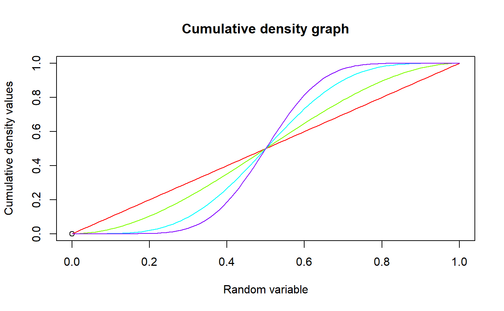

These functions provide the ability for generating probability density values, cumulative probability density values and moment about zero values for the Beta Distribution bounded between [0,1].
mazBETA(r,a,b)
| r | vector of moments. |
|---|---|
| a | single value for shape parameter alpha representing as a. |
| b | single value for shape parameter beta representing as b. |
The output of mazBETA gives the moments about zero in vector form.
The probability density function and cumulative density function of a unit bounded beta distribution with random variable P are given by
$$g_{P}(p)= \frac{p^{a-1}(1-p)^{b-1}}{B(a,b)} $$ ; \(0 \le p \le 1\) $$G_{P}(p)= \frac{B_p(a,b)}{B(a,b)} $$ ; \(0 \le p \le 1\) $$a,b > 0$$
The mean and the variance are denoted by $$E[P]= \frac{a}{a+b} $$ $$var[P]= \frac{ab}{(a+b)^2(a+b+1)} $$
The moments about zero is denoted as $$E[P^r]= \prod_{i=0}^{r-1} (\frac{a+i}{a+b+i}) $$ \(r = 1,2,3,...\)
Defined as \(B_p(a,b)=\int^p_0 t^{a-1} (1-t)^{b-1}\,dt\) is incomplete beta integrals and \(B(a,b)\) is the beta function.
NOTE : If input parameters are not in given domain conditions necessary error messages will be provided to go further.
Johnson, N. L., Kotz, S. and Balakrishnan, N. (1994) Continuous Univariate Distributions, Vol. 2, Wiley Series in Probability and Mathematical Statistics, Wiley.
Trenkler, G., 1996. Continuous univariate distributions. Computational Statistics & Data Analysis, 21(1), p.119.
Available at: http://linkinghub.elsevier.com/retrieve/pii/0167947396900158.
#plotting the random variables and probability values col<-rainbow(4) a<-c(1,2,5,10) plot(0,0,main="Probability density graph",xlab="Random variable",ylab="Probability density values", xlim = c(0,1),ylim = c(0,4))#> [1] 0.000000 0.117612 0.230496 0.338724 0.442368 0.541500 0.636192 0.726516 #> [9] 0.812544 0.894348 0.972000 1.045572 1.115136 1.180764 1.242528 1.300500 #> [17] 1.354752 1.405356 1.452384 1.495908 1.536000 1.572732 1.606176 1.636404 #> [25] 1.663488 1.687500 1.708512 1.726596 1.741824 1.754268 1.764000 1.771092 #> [33] 1.775616 1.777644 1.777248 1.774500 1.769472 1.762236 1.752864 1.741428 #> [41] 1.728000 1.712652 1.695456 1.676484 1.655808 1.633500 1.609632 1.584276 #> [49] 1.557504 1.529388 1.500000 1.469412 1.437696 1.404924 1.371168 1.336500 #> [57] 1.300992 1.264716 1.227744 1.190148 1.152000 1.113372 1.074336 1.034964 #> [65] 0.995328 0.955500 0.915552 0.875556 0.835584 0.795708 0.756000 0.716532 #> [73] 0.677376 0.638604 0.600288 0.562500 0.525312 0.488796 0.453024 0.418068 #> [81] 0.384000 0.350892 0.318816 0.287844 0.258048 0.229500 0.202272 0.176436 #> [89] 0.152064 0.129228 0.108000 0.088452 0.070656 0.054684 0.040608 0.028500 #> [97] 0.018432 0.010476 0.004704 0.001188 0.000000#> [1] 0.4#> [1] 0.04#plotting the random variables and cumulative probability values col<-rainbow(4) a<-c(1,2,5,10) plot(0,0,main="Cumulative density graph",xlab="Random variable",ylab="Cumulative density values", xlim = c(0,1),ylim = c(0,1))#> [1] 0.00000000 0.00059203 0.00233648 0.00518643 0.00909568 0.01401875 #> [7] 0.01991088 0.02672803 0.03442688 0.04296483 0.05230000 0.06239123 #> [13] 0.07319808 0.08468083 0.09680048 0.10951875 0.12279808 0.13660163 #> [19] 0.15089328 0.16563763 0.18080000 0.19634643 0.21224368 0.22845923 #> [25] 0.24496128 0.26171875 0.27870128 0.29587923 0.31322368 0.33070643 #> [31] 0.34830000 0.36597763 0.38371328 0.40148163 0.41925808 0.43701875 #> [37] 0.45474048 0.47240083 0.48997808 0.50745123 0.52480000 0.54200483 #> [43] 0.55904688 0.57590803 0.59257088 0.60901875 0.62523568 0.64120643 #> [49] 0.65691648 0.67235203 0.68750000 0.70234803 0.71688448 0.73109843 #> [55] 0.74497968 0.75851875 0.77170688 0.78453603 0.79699888 0.80908883 #> [61] 0.82080000 0.83212723 0.84306608 0.85361283 0.86376448 0.87351875 #> [67] 0.88287408 0.89182963 0.90038528 0.90854163 0.91630000 0.92366243 #> [73] 0.93063168 0.93721123 0.94340528 0.94921875 0.95465728 0.95972723 #> [79] 0.96443568 0.96879043 0.97280000 0.97647363 0.97982128 0.98285363 #> [85] 0.98558208 0.98801875 0.99017648 0.99206883 0.99371008 0.99511523 #> [91] 0.99630000 0.99728083 0.99807488 0.99870003 0.99917488 0.99951875 #> [97] 0.99975168 0.99989443 0.99996848 0.99999603 1.00000000mazBETA(1.4,3,2) #acquiring the moment about zero values#> [1] 0.6mazBETA(2,3,2)-mazBETA(1,3,2)^2 #acquiring the variance for a=3,b=2#> [1] 0.04#only the integer value of moments is taken here because moments cannot be decimal mazBETA(1.9,5.5,6)#> [1] 0.4782609